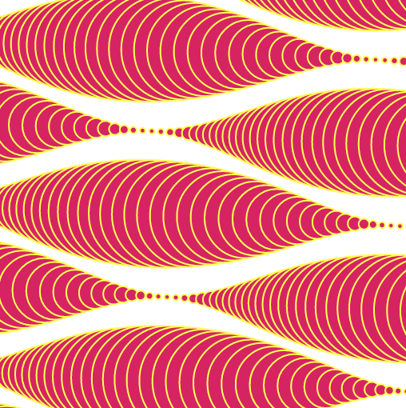
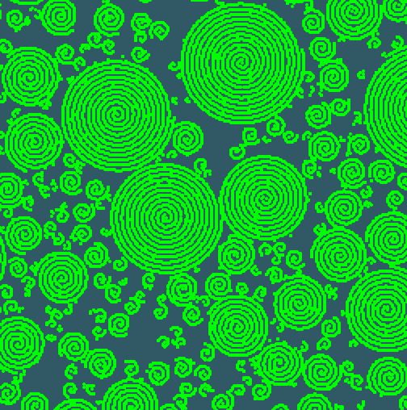
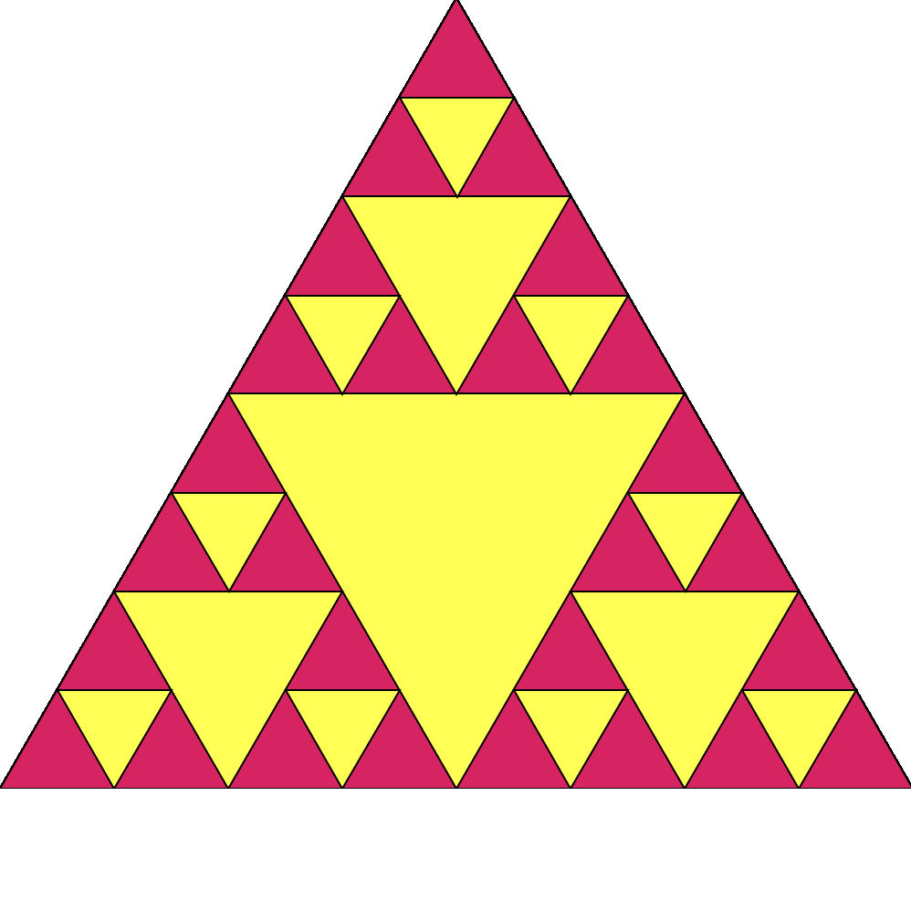
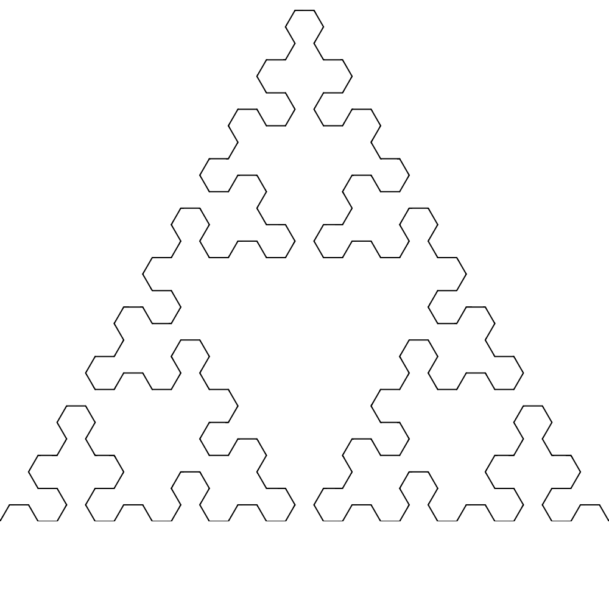
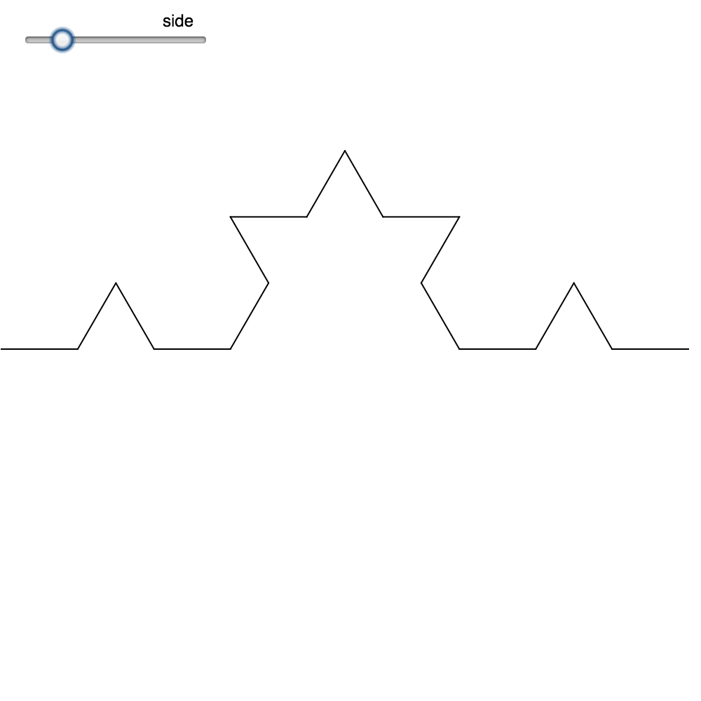
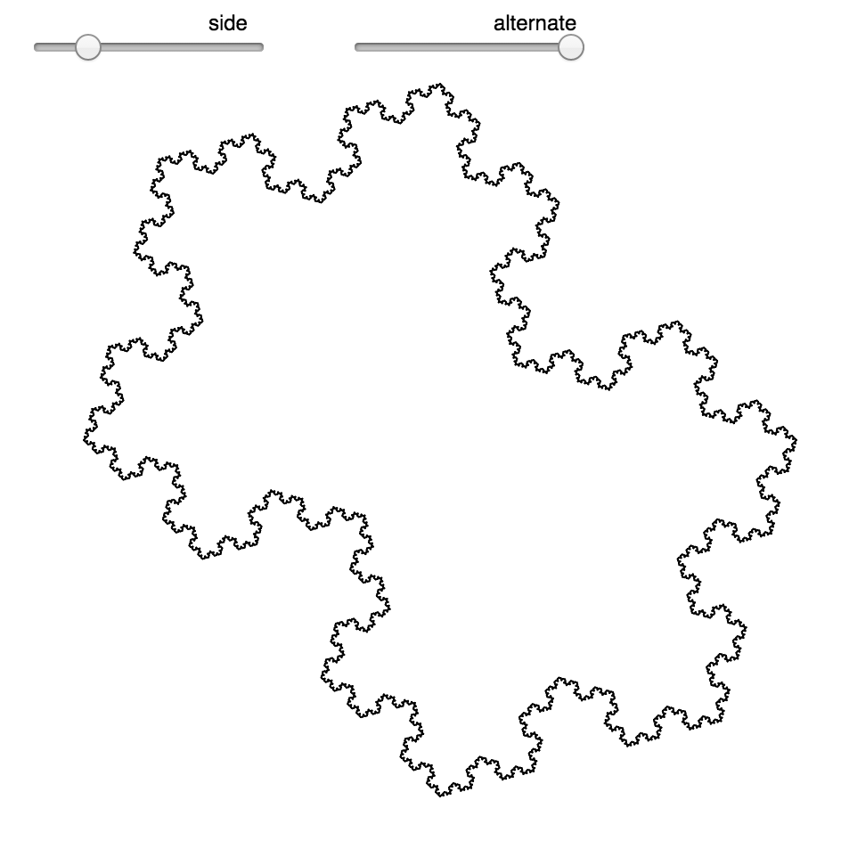
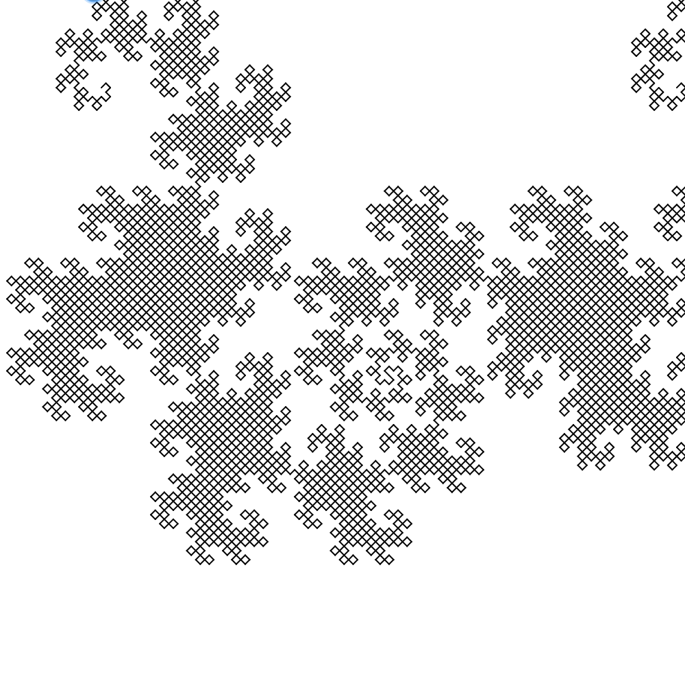
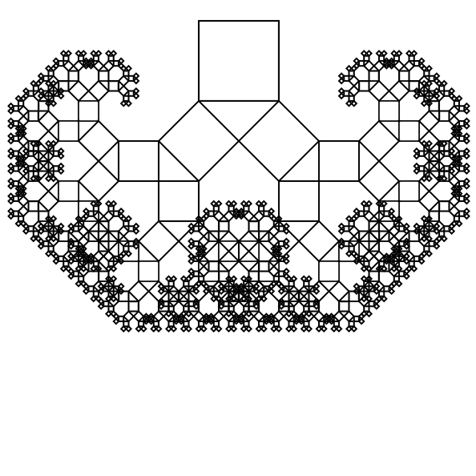
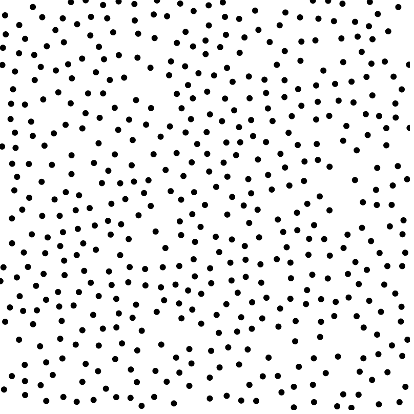

Waves
Generative wave experiment in p5.js.
Technical archaeology
A preserved collection of older coding experiments, prototypes and utilities from my technical work. These are kept as evidence of the engineering background behind my later product and technology leadership work.

Generative wave experiment in p5.js.

Geometric spiral exploration in p5.js.

Interactive recursive triangle construction.

Recursive space filling curve experiment.

Single recursive Koch curve.

Two dimensional recursive snowflake.

Interactive recursive dragon curve.

Recursive branching geometry.

Interactive spatial point sampling experiment.
A browser prototype for estimating breathing rate from manually counted respiratory cycles.
Open prototype →An early interactive graph prototype using the Vis.js graph library.
Open prototype →